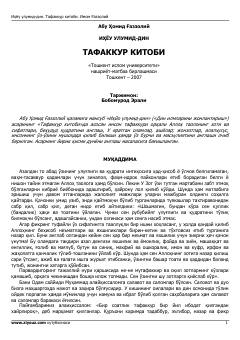

IUTafakkur qilish va Alloh yaratgan olamlarni anglash fazilatlari haqidagi asar.
Imom G‘azzoliyning mashhur "Ihyou ulumid-din" asarining ushbu kitobi inson tafakkuri orqali Alloh taoloning zoti, sifatlari va buyuk qudratini anglashga bag‘ishlangan. Unda fikrlashning fazilati, uning inson hayoti va ibodatidagi o‘rni oyat va hadislar asosida yoritib berilgan.